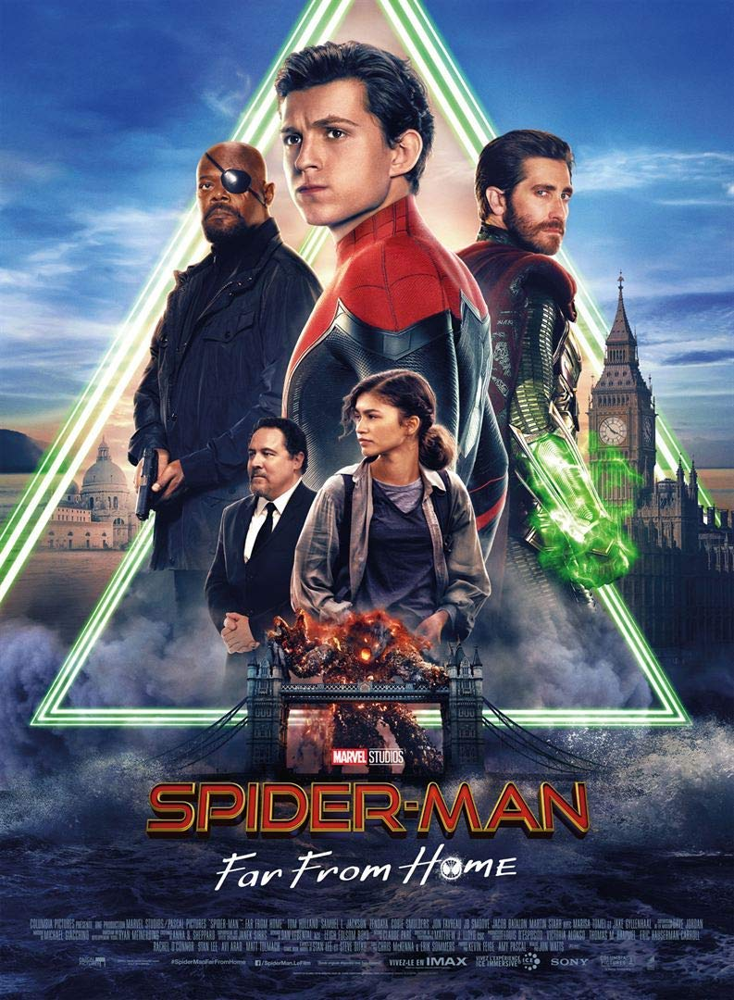
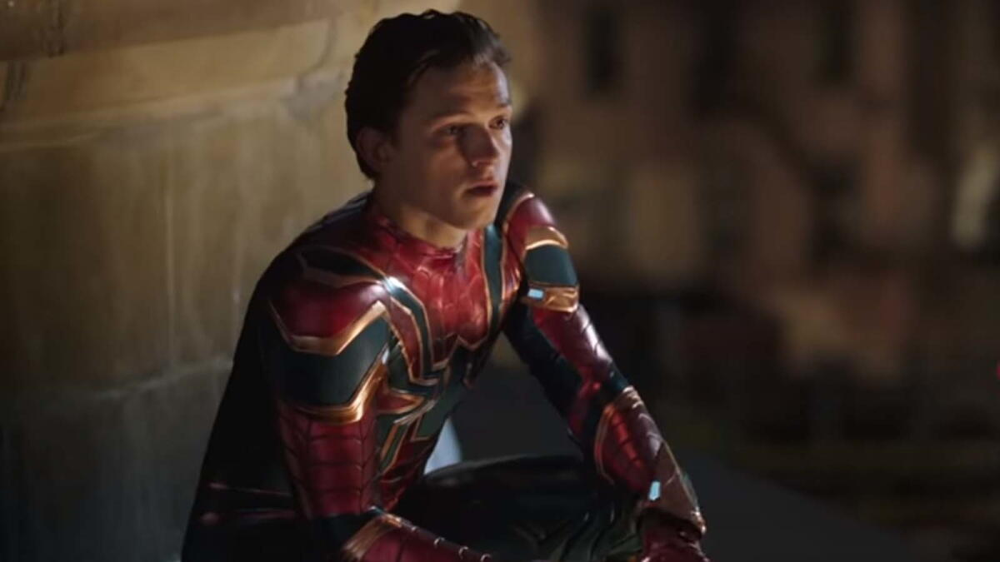
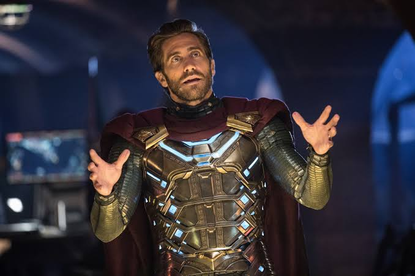

Spider-Man : Far From Home (2019)

| Titre original | Spider-Man : Far From Home |
|---|---|
| Année | 2019 |
| Genre | Action, Aventure, Science-fiction |
| Durée | 129 minutes |
| Réalisateur | Jon Watts |
| Acteur principal | Tom Holland |
| Scénaristes | Chris McKenna, Erik Sommers |
L'histoire
Dans Spider-Man : Far From Home, Peter Parker rêve de partir en voyage scolaire en Europe et de se déclarer à MJ. Mais Nick Fury le rattrape en pleine tournée : il a besoin de lui, car des créatures géantes, les Élémentaux, ravagent la planète.
Sur place, Peter rencontre Quentin Beck, surnommé Mystério, un héros venu d'un autre monde qui affirme combattre ces monstres. Peter lui fait confiance, d'autant qu'il se sent très seul depuis la mort de Tony Stark.
Au fil de l'histoire, il comprend que tout n'est pas ce qu'il semble être et qu'il doit apprendre à se fier à son propre jugement, sans attendre que quelqu'un d'autre prenne la relève de Tony.
Les moments importants
- Le voyage scolaire : Peter part en Europe avec sa classe, espérant oublier son rôle de super-héros et se rapprocher de MJ.
- L'attaque de l'Élémental d'eau à Venise : Peter, Mystério et Nick Fury affrontent une première créature géante.
- La rencontre avec Mystério : Quentin Beck se présente comme un héros venu d'une Terre parallèle, dont le monde a été détruit par les Élémentaux.
- Le cadeau de Tony Stark : Peter reçoit de Tony les lunettes EDITH, une IA qui commande un arsenal de drones. Il les confie à Beck, qu'il juge plus digne de les porter.
- Le rapprochement avec MJ : à Prague, les deux adolescents se découvrent des sentiments, et MJ comprend que Peter est Spider-Man.
- La vérité sur Mystério : Peter découvre que les Élémentaux sont des illusions créées par Beck, un ancien employé de Stark, avec l'aide de drones.
- La manipulation : Beck piège Peter dans des hallucinations, mais Peter retrouve ses esprits grâce à son sens d'araignée.
- Le combat final à Londres : Peter affronte l'armée de drones, démasque Beck et reprend le contrôle d'EDITH. Beck est tué, mais révèle avant sa mort l'identité de Spider-Man au monde entier.
Les personnages
Peter Parker
C'est le personnage principal du film. Lycéen de seize ans, il voudrait profiter de son voyage en Europe et se rapprocher de MJ, mais il doit aussi assumer l'héritage de Tony Stark, dont la disparition le pèse.
Quentin Beck / Mystério
C'est l'antagoniste du film. Il se présente comme un héros venu d'une Terre parallèle pour combattre les Élémentaux, mais il est en réalité un ancien employé de Stark qui fabrique de fausses menaces grâce à des illusions et à des drones.
Nick Fury
C'est l'ancien directeur du S.H.I.E.L.D. Il rattrape Peter pendant son voyage et le pousse à prendre la place de Tony Stark dans la lutte contre les Élémentaux.
Images du film

